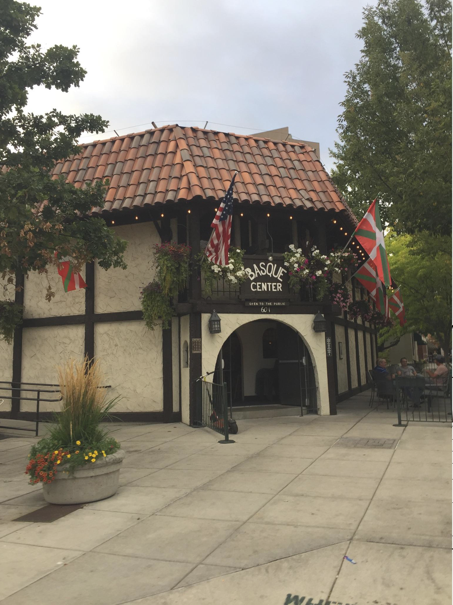

Photoshop Post-Apocolyptic Project
For this project we had to find a building that we wanted to create a post-apoctolyptic version of in photoshop. I chose to do the Basque building located in downtown Boise.

Original image

Post-Apocolyptic image